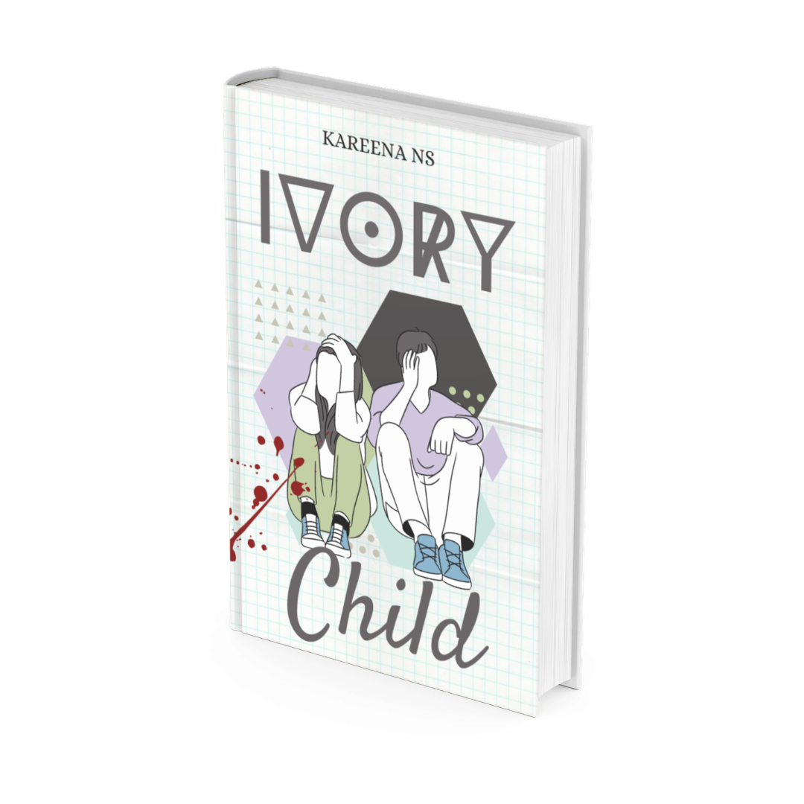
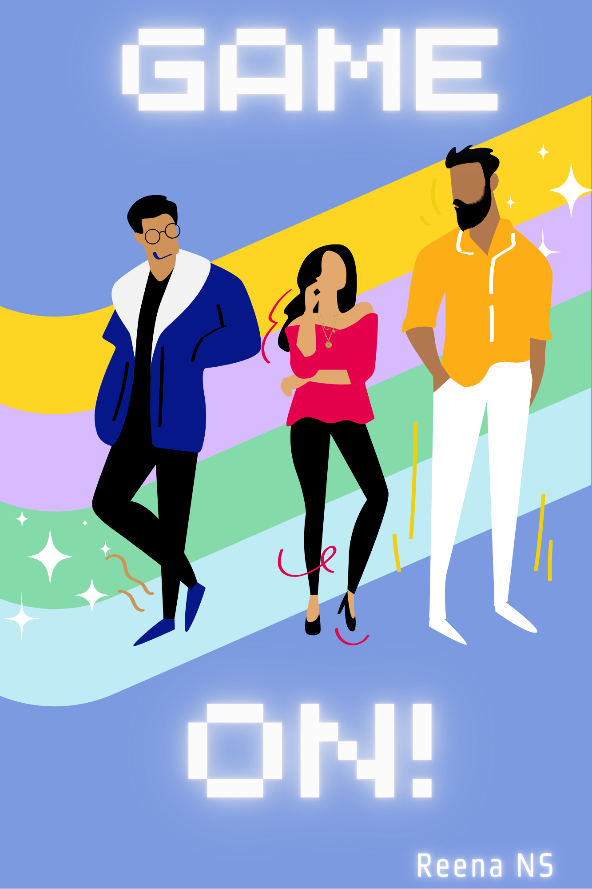

Ivory Child
What happens when the perfect student meets the boy that can cause a school to fall apart? Exclusively on Wattpad.

Nalini came to college with one goal: win the Game On! showcase. She didn’t plan on competing against her ex—or realizing that the spark between them might be the one thing she can’t control.
Excerpt
The Start of a New Beginning
When I imagined the most important moment of my life, I pictured myself calm, confident, and definitely not spiraling into a bag of hot Cheetos.
By three, my stomach started churning.
By four, I was breaking out in hives.
By five, I stress-ate an entire semester’s worth of mango chow my dad made for me before move-in day.
What can I say? When I’m stressed, I default to spicy.
By the time I stopped in front of the oak double doors of Game On!’s meeting room, I was soaked in sweat and actively panicking. If I didn’t make it in… my life was over. I spent my entire high school working toward getting into EAU’s prestigious game dev club. What if they hated me? What if they didn’t let me in?
Okay, Nalini, calm down, I told myself. No matter the outcome, you’ll still be alive at the end of the day. Hopefully.
I pushed the door open with a metallic click, and as soon as I walked in, a gust of cold air greeted me. And then… I saw him. Shaz. Sitting in the middle of the front row, chatting with what looked like one of the members of the exec board. What was he doing here? I thought he hated coding.
He must have sensed me staring at him. He looked up from his conversation, and his dark brown eyes landed on me. Shaz looked the same as the last time I saw him before summer break—black rimmed glasses, scruffy, dark hair, and a slightly-patchy goatee.
He scanned me for a moment before he turned his attention back to the boy like I was nothing more than a stray piece of lint on his shirt to brush off.
My heart sank to my stomach.
Well, so much for that pep talk at the door this morning. This day officially stunk. And I thought the worst part of my day would be starting it in a ditch looking for my phone five minutes before class started.
I scurried to grab a seat in the second row, almost right above him and the boy. What were they even talking about? Why the hell would Shaz come here? He didn’t know how to code, or even like it. Unless he wanted to get back together…
“And between us… if you just agree with what everyone else says during their speech, you should be fine. Just take bits and pieces from everyone else,” the guy whispered to Shaz. I knew it. He didn’t even have any credentials to be here. Hell, it would take a miracle to get Shaz to learn how to code in a year, far less for a summer.
After a few moments of quiet chatter around me, Shaz turned around and met my eyes. His full lips curved up and said everything he didn’t. I’m here, in your space, and there’s nothing you can do about it.
“Hey, is this seat taken?”
“Even if it isn’t, I’m going to say ‘yeah’ because I’m in an extra pissy mood right now,” I retorted to the bodiless voice next to me, my gaze not leaving Shaz’s. Finally, Shaz turned around. The person sat anyway, and I scowled. Of course, they did. Because the natural next step after someone is rude to you is trying to sit next to them. I glanced around. Like ten minutes ago, the room was still half empty, so there wasn’t even the excuse that all the seats were taken.
When I turned to look at who the person was, I gasped. “Oh lord, sorry Rasheed. I ent even know it was you.”
He folded his arms over his chest and glared at me. My aforementioned time in the ditch this morning was made a lot shorter by one tall, curly-haired boy. We’d only known each other a few hours, but the moment I learned he was Trinidadian too, I decided he was my favorite person on campus.
“Yuh should be sorry gyal,” Rasheed said, half-serious. “You seem to be everywhere I turn. Like you is my soulmate?”
I felt my cheeks get hot, and I smiled. Out of the corner of my eyes, I spotted Shaz turn around and look at Rasheed, then me.
“Perhaps, or maybe, we meant to be arch-nemeses,” I joked.
Rasheed shook his head. “I think you already find an archnemesis,” he said, then pointed to Shaz with his lips. He had turned around and was silent, his fists clenched on his desk.
“Alright everyone, today’s a very special day. Recruitment day!” the president announced, then clapped her hands together. “My name is…” Emily Stanford, third-year and top of the school of computational media. She built the most impressive game to date in the club with a team of seniors who graduated years before. I might have done a little cyberstalking on her.
“Emily, and I’m Game On!’s president. Usually, we do introduction presentations as auditions,” she started. Usually? I had spent months prepping for mine, today. “But this year, I want to try something different to filter recruits into members. A coding challenge!”
Cold spread across my chest and trickled into my limbs. I wasn’t prepared for something so on-the-nose. Game On! never had live auditions before. Not in any of the archives, forums, or Reddit threads I’d dug through at two in the morning. This was a casting call, and I hadn’t even learned my lines.
“Each of you guys will have an hour to code a prompt you can choose from this list.” Emily clicked her mousepad definitively, and the next slide of her presentation contained a list of about 20 prompts—dense and unforgiving. I scanned them. Physics-based movement system. Procedural terrain generator. Dialogue tree with branching consequences.
My brain stalled, and I glanced around the room. People were shifting nervous glances to each other. Next to me, Rasheed whistled low.
“Wam gyal, like yuh nervous?” he whispered to me.
“Aren’t you?” I asked him through pursed lips. He looked the way I wanted to feel—as confident as a seagull hungry at sunset.
“I’ll give you all a minute to choose your prompt, but once it’s 5:35, your hour begins.”
I pulled out my laptop and booted it up. Looks like we weren’t wasting any time.
Someone in the third row raised his hand. Emily frowned and lifted a brow, but motioned for him to speak. “What if we already prepared introductory presentations?”
Emily gave a small, tight-lipped smile. “Unfortunately due to some incidents of cheating last year, we won’t be doing that for recruitment. But hey—stick around and you’ll still get four teams battling it out, a cash prize, and a shot at pitching to Blitz’s CEO. Just with more… precise recruitment.”
A few people laughed. No one sounded entirely relaxed.
“Now,” she continued. “Remember that it doesn’t have to be perfect. Let’s see what you can do.”
She clapped once, and a timer at the top of her laptop screen started. The room dropped to the decibels of held breaths and utmost concentration.
I scanned through the list again, and finally, my gaze landed on a prompt that stuck out to me. ‘Design a dialogue system with branching choices and meaningful consequences that affect the outcome of a short scene.’
That was doable. It was harder than other prompts… but like she said—it didn’t have to be perfect. It just had to be good.
I hovered over it for a second longer, weighing my options. Safe… or standout? My fingers moved before I could second-guess myself, and I was already typing.
By the ten minute mark, I had something basic mapped out. By thirty, the logic was in place, branches connected, outcomes starting to take shape.
I exhaled slowly, flexing my fingers before diving back in. The branches were there, but they felt… shallow. Predictable. Like I’d taken the safest possible route through every choice.
Not good enough. I tweaked a condition, added another path. Then another. If the player chose A, it looped back with consequences. If they chose B, it locked them out of an entire branch.
I leaned back slightly, scanning through my logic—And made the mistake of looking up.
In the row in front of me, Shaz was already done. Or, at least, it looked like it. His screen was too dark for me to see—damn those privacy protectors, but he wasn’t typing anymore. Just… watching his screen, one hand resting against his mouth like he was thinking through something instead of scrambling to finish.
My stomach tightened. No way.
I glanced back at mine, suddenly hyper-aware of every messy line, every rushed workaround.
Focus, Nalini.
I forced myself back into it, tightening my code, smoothing transitions, making sure nothing broke if someone chose the “wrong” option. Finally, I got to the point where everything felt cleaner, and my unit tests ran. My comments documenting functionality was janky, but the logic worked.
The timer ticked down in the corner of Emily’s screen. 12:43. Plenty of time. Unless something went wrong. Like on cue—Unity decided today was my day.
It froze. I blinked. Clicked. Nothing.
My breath caught in my throat.
No, no, no—
I ran it again.
Error.
A line I’d just edited. A condition misfiring, breaking the entire branch. I swallowed hard, fingers moving faster now, backtracking, scanning, trying to find where it all went sideways.
12:52. I was seconds away from either fixing it or full-on breaking down.
Think. Don’t panic—trace it.
My eyes locked onto the condition. The one I’d just changed.
If choice B, then—
Wait. I’d flipped it. I sucked in a breath, fingers moving fast, correcting the logic, rerunning the program—
For half a second, nothing happened. Then—It worked. Every branch, every condition, exactly how I intended. A shaky breath slipped out of me, something between a laugh and a sob.
Okay. Okay, I was back.
“Time!”
Featured Work

What happens when the perfect student meets the boy that can cause a school to fall apart? Exclusively on Wattpad.
Currently in search of beta readers for Game On!, a New Adult romance. Click on this tile to be rediurected to a form where you can sign up to read and provide feedback.